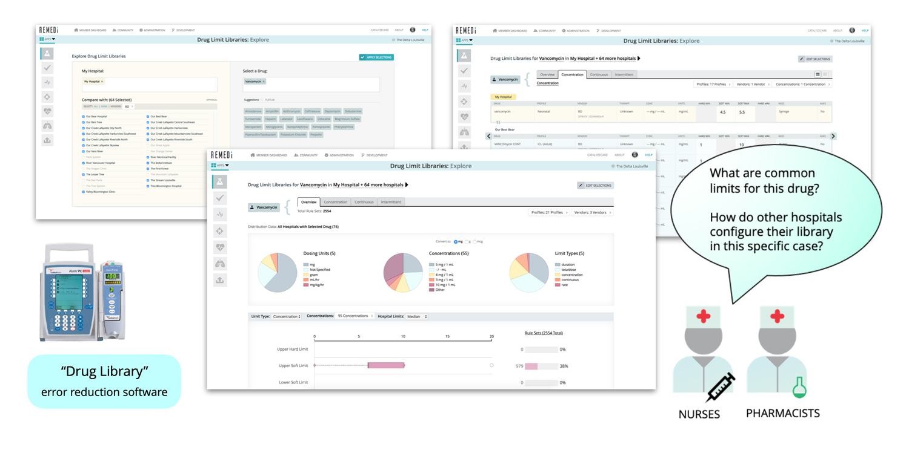
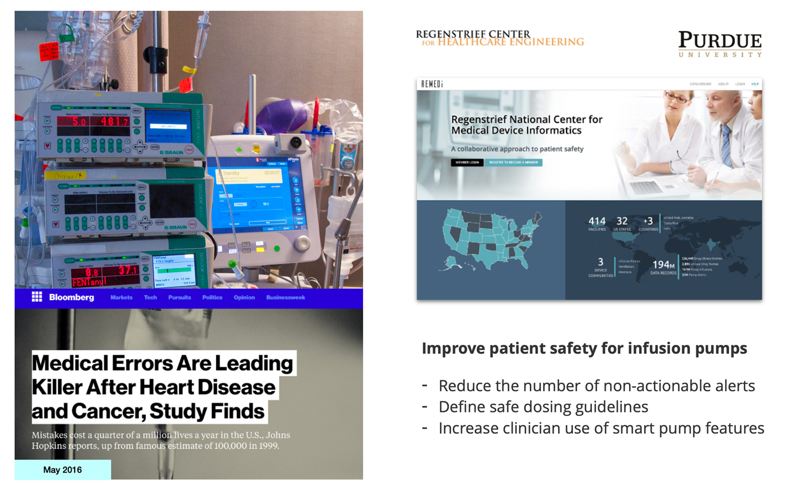
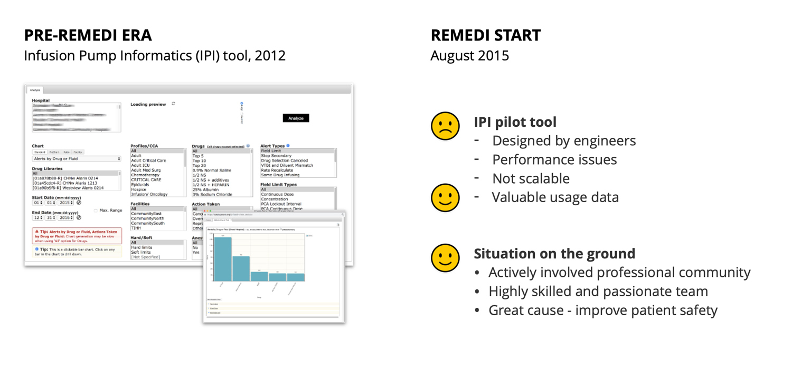
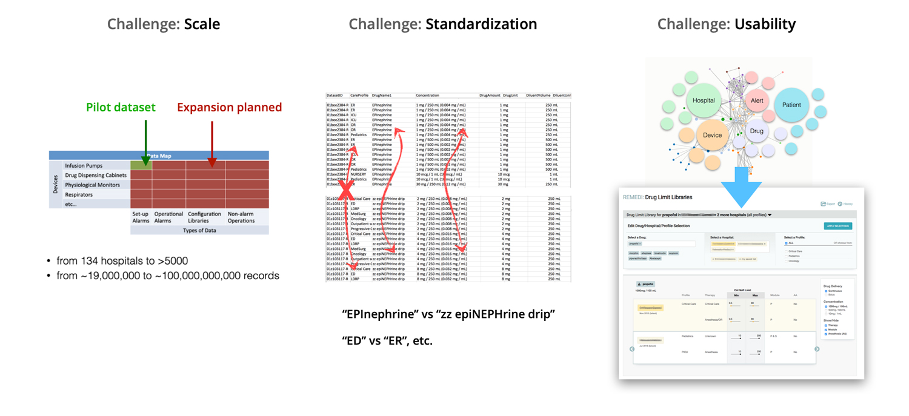
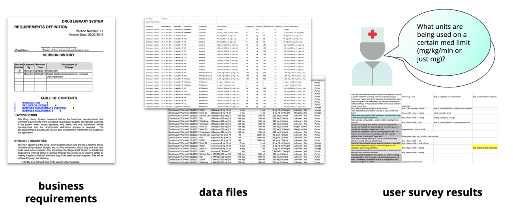
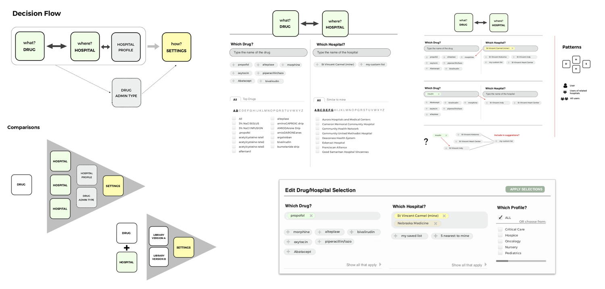
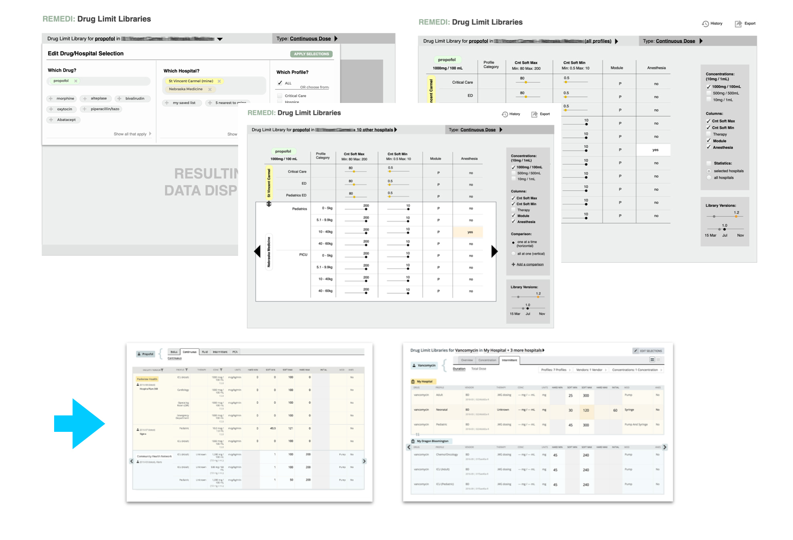
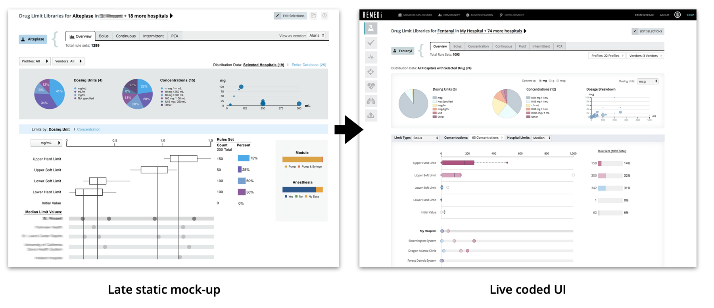
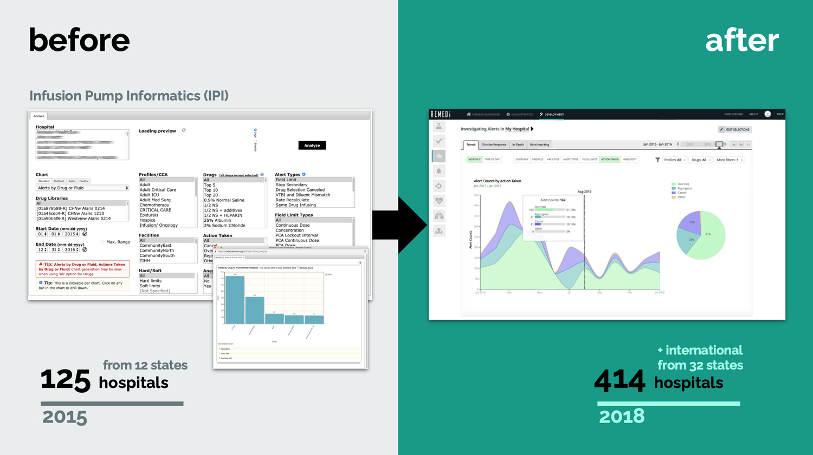

A story of one project: Drug Limit Libraries tool
To illustrate my motivation, approach and design process, I'll use the example of my work on the Drug Limit Libraries (DLL) tool. This tool was the first in the suite of medical device data analytics apps created for the REMEDI web platform at Purdue in 2015-2019. The tool was designed for hospital clinicians to analyze details of infusion pump settings and make comparisons across hospitals.

The Big Picture
I approach every design task, big or small, with an eye on the big picture and larger context of the project. What problem are we solving? Why does it matter? Who does our product help, and how? This thinking motivates and helps to focus on what's important.
In the case of REMEDI, we addressed the problem of patient safety related to the use of medical devices in hospitals. By agreeing to share their data, participating hospitals got access to data from other members of REMEDI, using insights from our analytics to improve their practice and overall patient safety. The goal was to create a platform that all 5000+ US hospitals and international medical community would want to use.

Starting Point
When we started on REMEDI in Sep 2015, there was already a well-established, engaged community for Infusion Pump Informatics (IPI) in place with 125+ hospitals across 12 states participating and sending over data. There was also a pilot app in place with basic data upload functionality and a simple view into data. The pilot was designed by an engineer, suffered performance issues and was not scalable.
Our new scrum team included an exceptional project manager, a most talented developer/systems engineer (with a second skilled dev joining later), an in-house pharmacist subject expert, a small team of medical researchers, and myself in the role of a User Experience Architect.

Challenges
Designing for scale was one big challenge we faced, both in terms of system architecture and the user experience. In design of the analytics UI I had to consider the big and growing number of potential selection options, huge number of data points for visualization, loading time and general performance.
We had to map non-standard irregular data in customer data files to standards to enable meaningful comparison. To help with data mapping, I designed a multi-step uploader tool with a step where we showed the user previously unmapped values and asked them to pick the best match. The process needed to be intuitive and non-tedious.
The overall complexity of data posed a big challenge for designing a simple-to-use, practical UI. This is the kind of design challenge I like best.

Research
Good design starts with good research. As a UX designer, you are equipped with a body of knowledge on qualitative and quantitave research methods, tools and techniques. In practice, the context of a concrete project, environment and situation dictates what methods and resources are available and make most sense to use.
The DLL tool was a new application altogether, with no existing model of use and no competition on the market. In the initial design of the DLL tool I relied primarily on business requirements, analysis of available data, and a questionnaire sent to community members. We asked clinicians what questions they would want answered if they could see other hospitals' data. The beauty of REMEDI project was that target users were directly accessible for a conversation.

Information Design & Early Concepts
Next came detailed analysis of all collected data points. I sorted the complex data, determined primary variables and major dependencies, organized content around broad categories: where, when, what, why and how, connected with user questions and considered the simplest pathways to answers.
On to first rough sketches. This stage feels like you are working on a puzzle. You have some pieces from research, you draw the missing pieces from your experience, you make assumptions (to validate with users later).
During this phase (and throughout all the design process) it's important to keep user persona and their story at the center. For REMEDI, the persona was a busy clinician needing a straightforward path to answers for anticipated questions. Yet our users didn't always have a ready question in mind. I needed to design experience that helped user formulate questions. That was a cool challenge.

On to Prototyping
After settling on the app flow, I started wireframing major screens and interaction. This is a fun stage when you explore different concepts, try something and discard it. You try and scratch until it clicks and the puzzle comes together. I love those eureka moments. Like, for example, this idea of a sliding comparison panel and an easy switch of primary data to compare against.
Of course, all of the work was shared early and often with the team and selected members of REMEDI steering committee. The design was continuously refined with internal feedback sessions.

Bringing it to Life
Next comes the visual design part and polishing of interaction. Here the design principles all come into play. You think of balance, proportions, space, affordances, consider responsiveness and scale.
I have the advantage of also being a decent coder, and prefer to deliver late stage interactive mock-ups coded in HTML, CSS & JS. In our small REMEDI team there was noone to handle front-end coding anyway. My mock-ups were the end product. It was the first app on a new platform, therefore no design system in place yet (we established a design system later on). This was the time to choose the tech stack, define the rules and set a scalable foundation. And it was a great time to learn. Here I mastered D3.js and wrote a whole charting library, I learned some functional programming with ClojureScript, got hands-on experience with React.

It's the best part - when your design vision comes to life, in a beautiful functional form, and when users start engaging with the product. Of course, design is never "done". Many cycles of improvement follow. To me watching the product I designed evolve is much like watching my babies grow. It's emotional and rewarding.
Impact
With the DLL tool we also launched a new uploader tool for hospital users to easily share their data and map custom values to standards to aid comparison. We added other data analytics tools in the next 2 years. Our community grew to over 400 hospitals across 32 states, and we gained international members. The project was a success with the medical community, winning 2017 AAMI Foundation Health Care’s Clinical Solution Award, 2017 Institute for Safe Medication Practices (ISMP) Cheers Award and 2018 IHI/NPSF Lucian Leape Institute Medtronic Safety Culture & Technology Innovator Award. Quality UX design played no small part in REMEDI success.
In 2022 REMEDI platform was acquired from Purdue University by Bainbridge Health.
